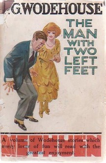

return jeffKeslin
two left feet

As part of our dev education, we're asked to pair up and solve problems with a partner. I can see how this will be a meaningful part of our next career, and I can imagine that we'll be asked to work in such a manner many times. However, at this point in my journey to becoming a developer, working with a partner feels a lot like being the guy at the dance with two left feet. I'm essentially doing the best I can to not embarrass myself while stumbling, going the wrong direction, getting off beat, and having to apologize to my dance partner for what they've just been roped into. Luckily, so far I've had nothing but kind and accomodating dance partners.
One of the more challenging aspects of pairing in this phase of our educations to me is trying to recreate the "driver and navigator" structure. Is the driver/navigator system a good idea if neither of you really know where you're going? A lot of times during GPS challenges my partner (and buddy, Edgar) and I will just jump into things randomly as we think of an idea and experiment, and who's driving or navigating is pretty nebulous. Maybe this is called "novice and novice" pairing? Despite this not being the desired method for pairing at DBC I feel like I've learned quite a lot from having this sort of looseness and freedom.
Pairing has also forced me to reflect on my thinking style more and consider how I learn. Maybe this will change as I become a more experienced programmer, but I often feel like I need more time to process things to really tackle a challenge. And I have a hard time doing that if I also have to concurrently navigate a social situation.
Reading feedback has been really helpful in showing me what a good partnership looks like. I have to admit though, I do get a little nervous right before I read the "I felt respect by my partner __". I don't mind so much if someone walks away from a pairing session thinking I'm a lousy programmer, but I would never want them to think that I didn't respect or appreciate them or their work. So to future and past pair-ees, cheers to some good times together. I look forward to learning from you!